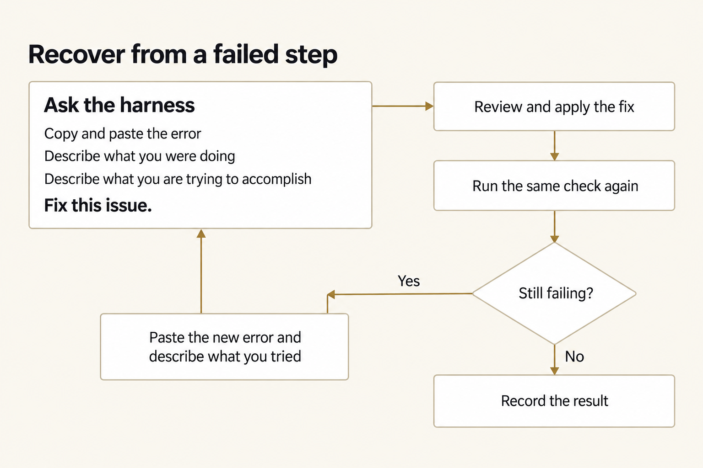
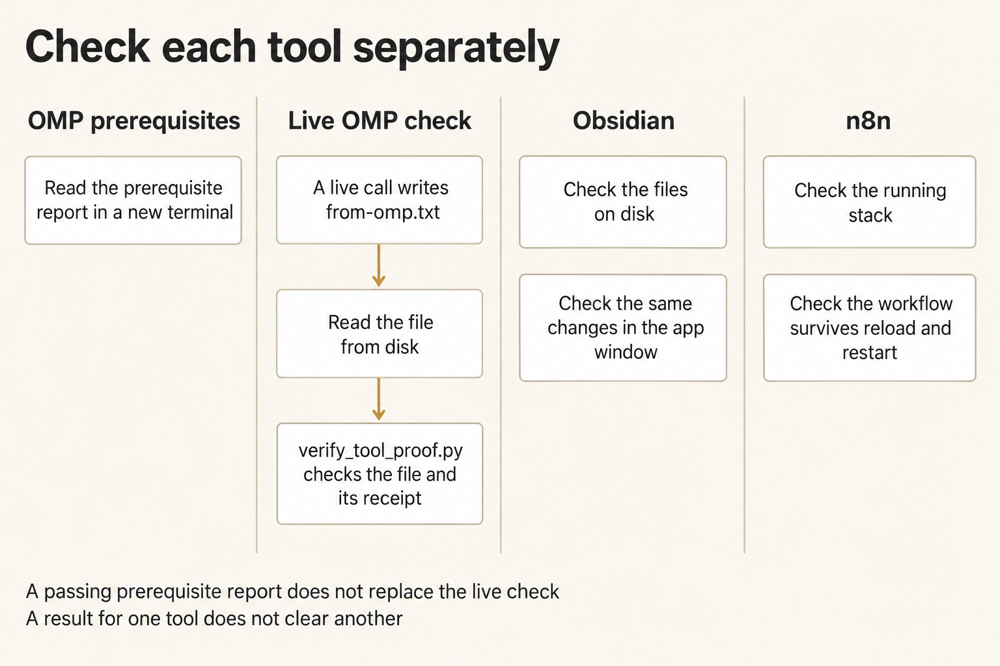

Module 0 · Set up the harness and get a long document you can trust
Install and check your tools, then have Oh My Pi plan, draft, check, and revise a North Shelf status brief one section at a time. You write the plan and the tests first, check the draft against the sources in separate review sessions, and decide whether you'd send it.
Start with one platform guide. Install what's missing, open a new terminal, and run the OMP readiness check. In that check, the model reads a fresh token and writes a real file through the course launcher. Check local Obsidian before Module 2 and local n8n before Module 7; keep those results separate from the status brief.
Plan for about one to three hours for setup (a rough estimate). Downloads, desktop readiness, or owner approvals may take longer. Plan for about three hours for the status brief (a rough estimate).
After this assignment you can
Get an AI tool to write a multi-section document from sources that stays true to them, and decide from evidence whether you'd send it.
You will
- Write the brief, the tests, and the outline before any prose, then have the AI draft one section at a time within that plan.
- Check the draft against things outside it: a checker you've made fail on purpose, a list of every number, and separate review sessions, then verify each finding yourself.
- Revise only the sections a verified finding or a changed fact touches, and confirm that every other section stayed the same.
Your progress
83 lab steps. Mark each one done as you finish it; progress is saved on this device.
On this page
Start here
Choose one platform path and stay in it. A terminal is the text window where you enter commands; the shell is the program, such as PowerShell or Bash, that runs them.
| Your machine | Use this guide |
|---|---|
| Windows, native PowerShell | Windows · PowerShell OMP and local n8n |
| Windows with or willing to install WSL 2 | Windows · WSL 2 with Ubuntu |
| Mac | macOS |
| Ubuntu desktop | Ubuntu |
| Arch Linux desktop | Arch Linux |
Choose PowerShell to keep OMP, Python, Git, credentials, and course work native to Windows. Choose WSL if your organization permits it and you want to do that work inside Ubuntu. Staff prepare local n8n for your chosen shell using the approved Docker Desktop Linux backend. You don't need a separate Ubuntu window for n8n on the PowerShell route. If device policy blocks the backend, keep your OMP result and record n8n HOLD until the owner resolves it. Don't complete both OMP routes.
What you will install
- Install Git and get a checkout, your local copy of the private course repository.
- Install Python 3.12 or newer.
- Install Oh My Pi (
omp) from the latest stable release (the setup prints the observedomp/<semver>). - Before Module 2, install local Obsidian. A vault is a folder of linked Markdown notes on your laptop. For a fresh install, use release 1.13.7; if it's already installed, keep it and record its version.
- Before Module 7, use the prepared local n8n environment. Staff own the two-service setup and persistence qualification. Follow your platform guide's n8n steps and run the common helper.
Restart your terminal after installing OMP so PATH changes take effect. Close the installation window and open a new terminal before starting OMP or entering your API key. PATH is the list of folders your shell searches for commands.
Get GitHub read access to TheHolofex/AIHB_OCT_2026; the hosted-course password doesn't grant it. Your guide checks approved Git credentials first. Use GitHub CLI (gh) for browser login only if that fails; you don't need it to run the AI.
For the live readiness check, use shared/run_omp.py with OpenRouter and the fixed model openrouter/anthropic/claude-sonnet-4.6. Use your own OpenRouter key, which you enter in the terminal rather than save in a file. If you lack account or repository access, ask its owner before continuing.
Module 7 uses the local visual workflow editor. You don't need n8n Cloud. Keep Assistant off and keep workflows unpublished during setup. In Module 7 you put your OpenRouter key into an n8n credential for the agent. Don't put that key in a file, a workflow export, a prompt, or your notes.
Install Git
Git is a version-control tool. It copies the course files from GitHub to your computer and records exactly which version you have. Your platform guide uses Git in step 4 to make your checkout, so Git comes first.
Step 1 of your guide reports whether Git is missing. Step 2 installs it from your operating system's official source, the same routes the Git project lists:
| Your machine | Where Git comes from | Install step |
|---|---|---|
| Windows, PowerShell route | Git for Windows, which WinGet installs as Git.Git |
Install Git and Python |
| Windows with WSL | Ubuntu's git package, installed inside Ubuntu |
Install Git and the other missing packages |
| Mac | Apple's Command Line Tools, which the Homebrew installer adds, or Homebrew's git |
Install Git and Python |
| Ubuntu | Ubuntu's git package |
Install Git and the other missing packages |
| Arch Linux | Arch's git package, in a full system upgrade |
Install Git and the other missing packages |
Git is ready when git --version prints git version 2. followed by more numbers. Each guide's Confirm Git works box runs that check right after the install. If an installer is blocked, or asks for approval you can't give, stop and ask the device owner. Don't download Git from any other website.
Before the first command
- Keep at least 15 GB free; WSL should have 25 GB.
- Get administrator approval for operating-system packages.
Start OMP with your OpenRouter key
After restarting your terminal, run the commands for your shell. Replace the placeholder with your complete API key.
Terminal: Bash or zsh on macOS, Linux, or WSL, ordinary user.
export OPENROUTER_API_KEY='YOUR_COMPLETE_API_KEY'
omp
Terminal: PowerShell on Windows, ordinary user.
$env:OPENROUTER_API_KEY = 'YOUR_COMPLETE_API_KEY'
omp
- Press Esc to skip provider setup.
- Select the OpenRouter model
openrouter/anthropic/claude-sonnet-4.6. - Choose your font, style, and other preferences.
- Send
helloand confirm the model replies, then start chatting.
No sign-in or YAML configuration is required. Keep using the same terminal; enter the key again if you open a new one. For hidden key entry, use the credential guide.
Expected: OMP replies to hello.
Stop: omp is not found or the provider rejects the request.
Recovery: Use PATH recovery for a missing command, or the credential guide for a rejected request.
When a step fails
Copy and paste the error into the harness. Describe what you were doing when the error appeared and what you are trying to accomplish, then ask it to fix the issue:
I'm trying to: [describe the outcome you want].
I was doing this when the error appeared: [describe the command or action].
Here is the error:
[paste the error message]
Fix this issue.
Review and apply the fix, then rerun the failed check. If it still fails, paste the new error into the same conversation and explain what you tried. If the harness itself cannot start, use When setup stops.


Give the harness the error, what you were doing, and your goal. Ask it to fix the issue, then check the result.
Figure text
Copy and paste the error into the harness, describe what you were doing and what you are trying to accomplish, and ask “Fix this issue.” Review and apply the fix, then run the same check again. If it still fails, return to the harness with the new error and what you tried. If it succeeds, record the result.
Ready means observable
Open a new terminal after the last install. Check these OMP setup results:


The prerequisite report, live tool write, and two application checks each show something different. One check cannot stand in for another.
Figure text
Check each tool on its own. In a new terminal, inspect the prerequisite report. A live OMP call must write a file and produce a receipt; open the file from disk to check it. A setup report marked PASS cannot replace that live check. For Obsidian, check both the files on disk and what you see in the app window. For n8n, check both the running stack and whether the workflow stays saved in the browser. A result for one tool cannot clear another.
originreportshttps://github.com/TheHolofex/AIHB_OCT_2026.git, andgit rev-parse HEADreports a 40-character id (the setup check prints the first 12).git status --shortis informational; keep unrelated changes. They don't block setup or QA;- the platform resolver selects an absolute Python executable reporting 3.12 or higher and saves it as
PY($PYin PowerShell); - the setup check prints the observed
OMP_VERSION omp/<semver>and the absolute command path; - the key check shows
SETin that terminal without printing the key; - the tool writes
from-omp.txtthrough the course launcher, and you read the file from disk; - the expected absolute tool path works in that new terminal without repairing PATH; and
- the setup report stays outside the checkout and contains no key, token, or password.
The setup report shows PASS, WARN or FAIL for version, path, repository, and key presence. Run verify_tool_proof.py separately on the tool-written file, token, and saved run record; it reports READINESS CHECK PASS or READINESS CHECK HOLD. Even a passing setup report cannot replace the live check.
A receipt records a run's inputs, tool calls, results, and file effects. Keep receipts and your work folder (the editable exercise copy) outside the checkout. That way, corrections won't overwrite supplied inputs or earlier attempts.
Open and read the result file from disk before accepting it. A tool saying “done” doesn't prove the file exists.
Set up local Obsidian
Obsidian is the note app for Module 2. A vault is a folder of notes on your laptop. Do this before Module 2, in the platform guide you already chose. You don't sign in to Obsidian, and you don't use your key here.
Open Set up local Obsidian in that guide and follow only those steps:
The guide installs the app if you don't have it, then has you practice in one new vault. If Obsidian is already installed, keep that copy and your existing notes. Don't mix steps from another platform.
You're done when the guide's checks pass and you saw the practice in the Obsidian window. Write Obsidian READY or Obsidian HOLD as the guide tells you. That result stays separate from your Oh My Pi and n8n results. If a step stops, use Obsidian troubleshooting.
Local n8n readiness for Module 7
Staff prepare the two-service n8n environment (n8n + external task runner images) and qualify persistence before class. Use the common Python helper in your platform's ordinary shell. Keep n8n separate from OMP, Obsidian, and Local model results.
In your chosen platform guide, follow only the n8n steps:
Open http://localhost:5678. On a fresh instance, complete local owner setup; on an existing instance, use its existing login. Leave Assistant off and don't enter your provider key until Module 7. Create a blank, unpublished workflow named Module 7 readiness, choosing a different name if it already exists. Reload and reopen it to confirm that it was saved.
Ask staff to stop and restart only the recorded course instance without removing its data. Reopen the same workflow afterward. Record n8n READY only when helper status, browser access, reload/reopen, and staff-assisted persistence all succeed. Otherwise record n8n HOLD with the first failure.
Existing instances and data remain owner-controlled. If staff have not prepared your environment, contact the device/support owner. Complete the checks on your own device; an OMP pass does not establish n8n readiness.
Local model readiness for Module 10
Staff provision the capstone tools before class. Run the checks in a fresh terminal on the machine you'll use for Module 10. Keep results separate from OMP, Obsidian, and n8n readiness.
Check local-model readiness before any download or launch, using the approved tool identities. The pre-download policy requires 35 GiB total free space on the actual destination and applicable cache volumes. A 24 GiB installed-RAM planning floor does not establish performance; every machine needs a complete exact-model rehearsal.
Record the platform, architecture, tool paths/versions, free space (bytes and GiB), RAM, port status, and device-owner approval. A base setup PASS does not clear capstone capacity. Unmeasured platform or architecture combinations remain unobserved until exercised on a qualifying machine.